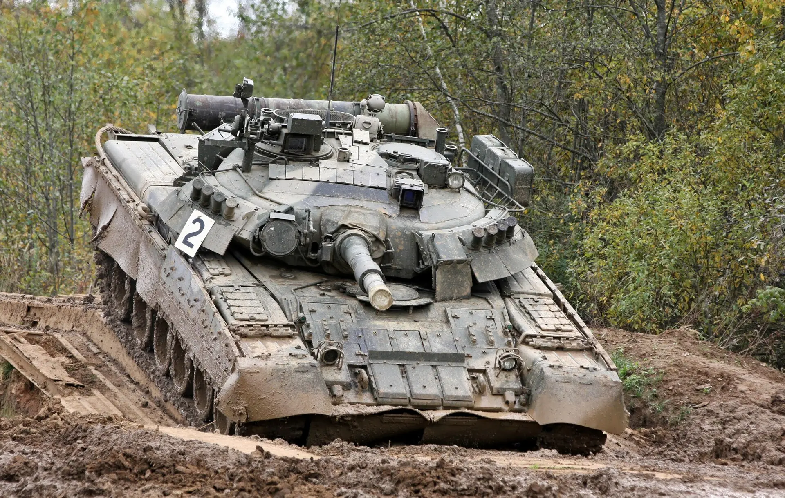

| T-80 | |
|---|---|
|
 |
Datos generalesPaís: Unión Soviética Año: 1976 Tripulación: 3 |
EspecificacionesPeso: 42,5 toneladas Motor: GTD-1000T, turbina de gas, 1.000 hp Velocidad máxima: 70 km/h |
|
ArmamentoCañón principal: 2A46-1 de 125 mm Ametralladoras: 1 × PKT de 7,62 mm y 1 × DShK de 12,7 mm Municion empleada
|
|
El T-80 fue un tanque de batalla principal desarrollado por la Unión Soviética durante la década de 1970. Su desarrollo estuvo basado en la experiencia obtenida con el T-64, pero incorporó una característica que lo diferenciaba de otros tanques soviéticos contemporáneos: el uso de una turbina de gas como sistema de propulsión.
El desarrollo estuvo dirigido por la Oficina de Diseño Kírov de Leningrado. El objetivo era crear un tanque de gran movilidad capaz de acompañar a las unidades blindadas soviéticas. El vehículo conservó el cañón de 125 mm y el cargador automático utilizados en otros diseños soviéticos.
La turbina de gas proporcionaba una elevada potencia para el peso del vehículo y contribuía a su alta velocidad. Sin embargo, este sistema también presentaba un consumo de combustible elevado en comparación con los motores diésel utilizados en otros tanques soviéticos.
La producción del T-80 comenzó en 1976 en la Fábrica Kírov de Leningrado. Posteriormente, la fabricación de diferentes versiones también estuvo relacionada con la Fábrica de Maquinaria de Transporte de Omsk.
Durante su producción aparecieron numerosas modificaciones destinadas a mejorar la protección, el armamento, el control de tiro y el sistema de propulsión. Estas modificaciones dieron lugar a varias versiones del T-80 utilizadas durante las últimas décadas de la Unión Soviética.
Durante la Guerra Fría, el T-80 fue considerado uno de los principales tanques soviéticos de alta movilidad. Fue asignado principalmente a unidades consideradas de primera línea y permaneció en servicio junto con los T-64 y T-72.
Después de la disolución de la Unión Soviética, diferentes variantes del T-80 comenzaron a participar en conflictos regionales. Uno de sus primeros empleos importantes ocurrió durante las guerras de Chechenia.
El T-80 y sus diferentes variantes participaron en diversos conflictos: